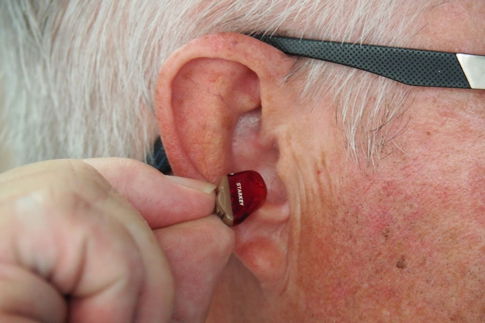

Le lien entre la perte auditive et la démence, les problèmes de la médecine moderne et d'autres raisons de s'inquiéter de votre audition en ce moment
27.04.2022
J'ai longtemps voulu parler de perte auditive. La pertinence de ce sujet augmente d'année en année. Déjà, sur 20 personnes, il y en a une avec un handicap dû à une déficience auditive. Et cela sans parler des cas moins graves.
Déjà, au moins 5% de la population mondiale souffre d'une perte auditive sévère. C'est-à-dire que dans le monde, 20 personnes sont handicapées à cause d'une déficience auditive, sans parler des cas moins graves.
Il n'y a rien à s'étonner ici: le mode de vie de l'homme moderne n'a pas une bonne santé. Nous sommes entourés par le bruit des bâtiments et des réparations, des moteurs et des outils. Les jeunes écoutent souvent de la musique à un volume élevé dans des écouteurs, endommageant les tissus de l'ouïe. Cependant, le plus grand pourcentage de ceux qui entendent mal tombe sur les personnes de 45 ans.

Causes de la déficience auditive
Tout d'abord, nous analyserons exactement comment le corps capte les sons. Cela nous permettra de comprendre ce qui est causé par les problèmes de perception sonore.
- Tout d'abord, la fine membrane du tympan capte les vibrations et les transmet à de minuscules osselets auditifs.
- Les oscillations vont profondément dans l'oreille interne, affectant le liquide dans la structure de l'oreille appelée «escargot».
- Ensuite, ils se transforment en impulsions électriques et pénètrent dans le cerveau le long des nerfs.
- Les structures cérébrales les traitent et extraient des informations sur la source du son et sa position dans l'espace.
- C'est seulement alors que nous réalisons ce qui se passe. L'ensemble du processus prend des millisecondes.
Des difficultés peuvent survenir à presque n'importe quel stade. Les dommages mécaniques, l'inflammation ou le bouchon de soufre habituel affectent également gravement l'audition. Les personnes âgées sont souvent confrontées à une perte auditive due au vieillissement banal des tissus: les capillaires se détériorent et les organes ne sont pas suffisamment alimentés et les nerfs ne peuvent pas transmettre rapidement et efficacement le signal.
Une courte liste de causes possibles:
- écoute régulière de sons forts;
- blessures à la tête;
- maladie infectieuse;
- prendre certains médicaments;
- âge;
- cancer et autres néoplasmes.
Quelle est la perte auditive dangereuse
Beaucoup n'imaginent pas à quel point l'audition est importante dans la vie quotidienne. Ce n'est pas seulement dans la façon de communiquer, quand au lieu d'une conversation téléphonique, il est plus facile de passer à la correspondance. L'ouïe est l'un des piliers de l'activité mentale.
Effets sur la santé
La perte auditive est vraiment dangereuse. Nous nous orientons dans l'espace à l'aide des oreilles, l'appareil vestibulaire est directement relié au nerf auditif. Et la perte auditive peut provoquer des interruptions dans ce processus.
Une personne peut être confuse sur la chaussée, par exemple, entendre les sirènes hurlantes, mais ne pas comprendre d'où il vient et où il faut s'éloigner. Ou ressentir un vertige soudain et tomber.
En outre, la perception sonore affecte la mémorisation. Pour compenser les problèmes d'audition, le corps redistribue les ressources. D'où les problèmes de concentration, l'incapacité d'allouer l'essentiel et les problèmes dans la mémoire.

L'un des symptômes les plus fréquents de la perte auditive est l'acouphène. Il provoque une tension émotionnelle, augmente le niveau de stress de fond. Une exposition prolongée à la psyché conduit à l'irritabilité et à l'anxiété, à l'épuisement nerveux.
Les statistiques ne sont pas réconfortantes: une légère diminution de l'audition augmente la probabilité de démence sénile, d'Alzheimer et de Parkinson de 2 fois, et une perte auditive sévère de 5 fois.
Conséquences sociales
Les patients avec une déficience auditive diagnostiquée notent souvent que la maladie les éloigne beaucoup des autres. La communication avec une personne sourde nécessite de la patience et de la compréhension: ces personnes demandent souvent, elles doivent rester en contact visuel avec l'interlocuteur, etc.
Oublier la date ronde, ne pas entendre quelque chose d'important — de telles bagatelles sont la communication. Les personnes âgées sont particulièrement difficiles, elles ne s'entendent pas toutes avec la technique au niveau de maintenir la communication sur les réseaux sociaux ou les messageries instantanées.
Le sentiment d'isolement est lourd de développement de la dépression.
Traitement de la perte auditive
Les soins de santé traitent les problèmes d'audition avec une connivence impardonnable. Il suffit de penser, même dans les pays développés, le meilleur qui peut offrir aux gens — une aide auditive et un paquet de vitamines. En fait, le manque de traitement approprié est le principal facteur de perte auditive précoce.
De plus, l'utilisation d'appareils auditifs ne fait que nuire à une personne. En prenant une partie du travail, ils contribuent à la relaxation, à la diminution de l'activité des structures auditives. Cette approche ne fait qu'accélérer la régénération des tissus.
Méthode alternative de récupération auditive
Dans notre Université, la recherche de médicaments a été menée au cours des 4 dernières années.
Nous recherchions un remède universel qui, par défaut, aurait une formule équilibrée et n'aurait pas d'effets secondaires graves. Comme la perte auditive affecte la plupart du temps les personnes de plus de 45 ans, nous avions besoin de substances efficaces mais aussi inoffensives que possible. C'est pourquoi nous avons choisi des composants naturels.
Des études récentes ont montré que le meilleur effet a .

Premièrement, il est une source de cannabidiol — une substance qui a un effet réparateur et raffermissant sur les terminaisons nerveuses. En outre, il est capable de soulager l'inflammation, ce qui est nécessaire en cas de détérioration de l'audition due à l'eustachiite, à l'inflammation catarrhale de l'oreille moyenne et à d'autres otites.
Deuxièmement, contient une combinaison unique d'acides gras polyinsaturés comprenant des acides oméga 3-6-9, gamma-linolénique, oléique et stéarique. Dans le complexe, ils éliminent presque tous les facteurs qui causent une perte auditive:
- nettoyer et soigner les vaisseaux et les capillaires afin que les organes auditifs reçoivent une nutrition adéquate et soient alimentés en oxygène;
- renforcer les membranes cellulaires et stimuler le métabolisme des tissus pour éliminer la stagnation;
- augmenter l'immunité, contrecarrer les effets négatifs de l'environnement et des microorganismes pathogènes;
- protéger les tissus contre le stress oxydatif en liant les radicaux libres et en empêchant le vieillissement des tissus;
- stimuler les fonctions cognitives, améliorer l'attention et la mémoire.
En plus des substances qui éliminent les causes de la perte auditive, nous avons également enrichi la composition en vitamines et en oligo-éléments qui ont un effet raffermissant. L'efficacité de a impressionné les experts de notre laboratoire et a ensuite été confirmée par les résultats des tests.
Études cliniques
302 patients présentant une perte auditive confirmée de diverses origines ont été sélectionnés pour vérification. Après ils ont été divisés au hasard en deux groupes: l'un a reçu un placebo, l'autre a pris .
Résultats d'un essai randomisé contrôlé par placebo:
| Placebo | ||
|---|---|---|
| Amélioration tangible de l'audition | 95% | 3% |
| Améliorer les capacités cognitives | 87% | 5% |
| Se débarrasser complètement des acouphènes | 92% | 2% |
Les patients ont bien répondu à l'expérience du médicament: la plupart ont affirmé que leur qualité de vie avait considérablement augmenté. Il est particulièrement heureux que beaucoup aient établi des relations avec leurs proches et aient redécouvert leurs passe-temps intellectuels et créatifs.
Où acheter
Le médicament n'est entré sur le marché que récemment, il n'est donc pas disponible dans les pharmacies pour le moment. Mais vous pouvez laisser une demande sur le site officiel. L'opérateur vous contactera: il vous conseillera sur toutes les questions relatives au produit et organisera la livraison. Le colis dans la semaine livrera le courrier.
Maintenant peut être acheté avec un rabais énorme. Dépêchez-vous, l'action durera jusqu'à 12.04.2022.
Et un conseil à mes lecteurs pour la dernière fois. La principale chose dans le traitement est la rapidité. Plus tôt vous prenez soin de votre santé, moins vous risquez de complications. Prenez soin de votre santé, vous en avez un.
Ce n'est pas la première fois que je commande. Je me suis d'abord acheté, puis j'ai décidé de faire un cadeau à ma sœur. J'ai été très impressionné par l'effet.
J'ai travaillé dans une usine de textile pendant une demi-vie, à 40, je n'avais presque rien entendu. Récemment appris sur et a décidé d'essayer. Cela m'a aidé, j'ai déjà ressenti une différence dans les semaines 2.
Déjà commandé, attente de mon colis.
Merci pour l'article, c'était très utile. Et l'action est très utile, je viens de commander le temps.
C'est effrayant de penser à quel point cela dépend de l'ouïe. Alzheimer, démence.
Acheté il y a un mois, et très heureux. Récemment, j'ai pu parler à mon fils au téléphone, j'ai presque tout entendu.
Je ne croyais pas que mon âge pouvait guérir l'ouïe. Il s'avère que j'ai douté en vain. vraiment un miracle!
Aujourd'hui, je me suis assis pendant 10 minutes et j'ai écouté le chant des oiseaux, c'est très bien. Merci beaucoup pour le conseil!
Acheté pour ma grand-mère, elle est très heureuse.
Livré en 3 jours, vraiment rapide.
Laissez vos commentaires:
Votre commentaire sur la modération